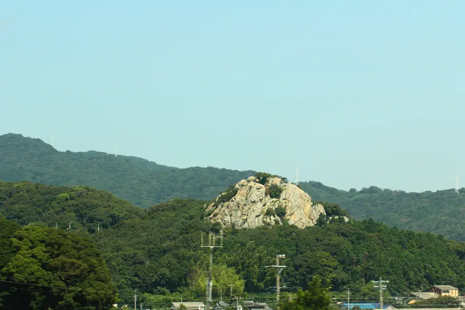

窓
新幹線の窓
旅の瞬間を見逃さない
列車選択
ライブガイド
車窓図鑑
FAQ
メダル帖
もっと見る
FAQ
新幹線の窓とは
今日、富士山は見えるか
墨絵車窓
車窓走馬灯
リンク集
お問い合わせ
プライバシーポリシー
日本語
EN
近くの車窓も見る

関連
豊橋の立岩
浜名湖のあと、岩が立つ。
関連
掛川城
駅のすぐそばに、白い天守。
関連
富士山
日本でいちばん有名な3分間。
MORE TO TRY
車窓をもっと楽しむ
FAQ
富士山FAQ
見える時刻、座席側、曇りの日の答えを確認。
FORECAST
今日の富士山 見える予報
今日の空で富士山が見えそうかを確認。
EXTRA
墨絵車窓
東海道新幹線の車窓を、静かな墨絵で。
EXTRA
車窓走馬灯
実際の車窓写真で、旅を短くめぐる。
JOURNAL
メダル帖
見つけた景色をスタンプとメダルで記録。
GUIDE
新幹線の窓とは
使い方と楽しみ方を30秒で紹介。
LINKS
車窓リンク集
出典や参考記事をまとめて読む。
CONTACT
お問い合わせ
写真提供、情報の訂正、ご感想はこちら。
 関連
掛川城
関連
掛川城
 関連
富士山
関連
富士山